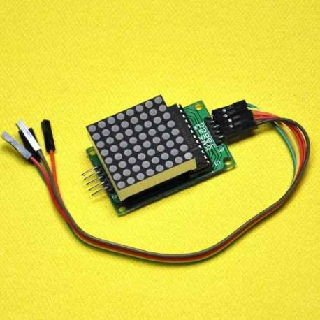

Calibración
Para la calibración utilizamos el modulo de ros desarrollado por Robotics and Perception group. La calibración requiere un tablero con una grilla regular de LEDs parpadeando.
En nuestro caso utilizamos como grilla el modulo Max7219 Dot Led Matrix 8x8

El mismo la controlamos desde un Arduino MEGA 2560 R3

Configuramos los siguientes parametros en dvs_calibration:
-
dots_w: Numero de filas LED
-
dots_h: Numero de columnas LED
-
dot_distance: distancia en metros entre los LED en metros
-
blinking_time_us: tiempo de parpadeo en micro-segundos
-
blinking_time_tolerance_us: Es la tolerancia en micro-segundos para contar la transición
-
minimum_transitions_threshold: Es el número mínimo de transiciones necesarias a considerar en la búsqueda de los LED.
-
minimum_led_mass: Es la mínima "masa" de una burbuja LED, es decir, la suma de las transiciones en este Blop
-
pattern_search_timeout: Es el tiempo de espera en segundos cuando el mapa de transición es reiniciado (que también se pone a cero cuando se encontró la matriz de LED)